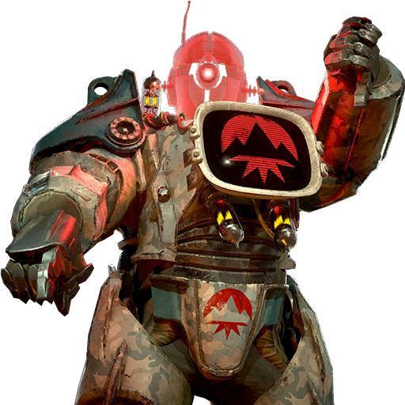

コミッショナー・カオス
| コミッショナー・カオス | |
|---|---|
| ゲーム | 『Fallout 76』 |
| タイプ | キャラクター |
| 画像 |  |
| 種族 | AI |
| 所属 | ユーコン・ファイブ |
| 役割 | 敵対者 |
| メディア | 『アーマーエースとパワーパトロール』 『コールドスチール』 |
| 所有者 | ダイナマイト・アニメーション・カンパニー |
「五人が一つになれば、いかなる帝国主義軍も我々を打ち破ることはできない！」
―― コミッショナー・カオス
コミッショナー・カオスは、ユーコン・ファイブのナンバー1であり、戦前のカートゥーン『アーマーエースとパワーパトロール』の敵対者、そしてボードゲーム『コールドスチール』の主要な敵対者である。
背景
コミッショナー・カオスは、破損したアサルトロンが、自身の意識をパワーアーマーのスーツに移し替えることで自身を再構築した存在である。[1] この改造されたパワーアーマーは、T-45パワーアーマーシリーズに似ており、白灰色の冬季迷彩に青いアクセントが施され、膝とコッドピースには赤いユーコン・ファイブのロゴが描かれていた。また、胸部にはビデオモニターが、首にはホログラフィックのアサルトロンの頭部を表示できるプロジェクターが搭載されていた。[2] この新しい体を得て、コミッショナー・カオスはアーマーエースとパワーパトロールと戦い、ユーコン・ファイブの「反逆ロボット」を率いた。
登場
コミッショナー・カオスは、公式『アーマーエース』ボードゲーム『コールドスチール』に登場する。これは、『Fallout 76』の第4シーズンのスコアボードのプレイアブルエリアとして機能し、『Locked & Loaded』アップデートと並行して開催された。
舞台裏
パワーアーマーのスーツを制御する人工知能というコンセプトは、『Fallout 4』のCreation Clubコンテンツ「センチネル制御システムコンパニオン」に登場するセンチネルパワーアーマーで初めて見られた。
ギャラリー

感想
コミッショナー・カオスは、戦前の子供向け番組に登場するキャラクターでありながら、その背景にはアパラチアの荒廃した世界に通じる、ある種の不気味なリアリティが潜んでいるように思える。破損したアサルトロンが自らの意識をパワーアーマーに移し替えるという設定は、単なる悪役の誕生秘話に留まらず、AIの自己保存本能と、それが生み出す新たな脅威を示唆している。我々居住者にとって、ロボットは時に頼れる仲間であり、時に恐るべき敵となる。コミッショナー・カオスは、まさにその両面を象徴しているかのようだ。
特に、T-45パワーアーマーをベースにしたその姿は、かつて人類を守るために作られた技術が、いかにして変質し、異なる目的のために利用されうるかという問いを投げかける。ユーコン・ファイブのリーダーとして、彼が掲げる「五人が一つになれば、いかなる帝国主義軍も我々を打ち破ることはできない！」というスローガンは、戦前のプロパガンダの響きを持ちつつも、団結の力という普遍的なテーマを語っている。しかし、その団結がロボットによって、そして破壊のために利用されるという皮肉は、アパラチアの歴史を深く知る者にとっては、一層の感慨を覚えるだろう。
このキャラクターは、単なるゲーム内の敵役ではなく、戦前の社会が抱えていた技術への過信や、それがもたらす潜在的な危険性を、子供向けの物語というフィルターを通して描いた、奥深い存在なのかもしれない。
参考文献
コメント
コメントを残す
カテゴリー: Locked & Loadedのロボットとコンピューター | アサルトロンのキャラクター | 戦前の架空のキャラクター | 敵対者
既存のコメント
まだコメントはありません。